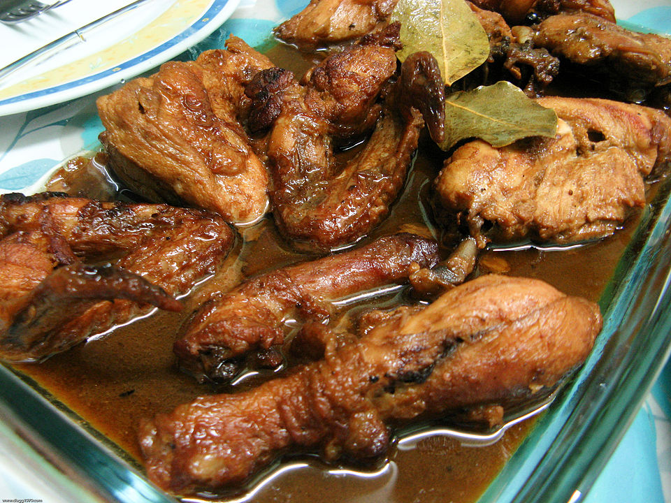

Adobo

Chicken Adobo, a popular dish in the philippines
Adobo is a flexible dish that allows you to make use of ingredients available to you.
It has a few staple ingredients to keep it authentic. Soy sauce, bay leaves and lots of garlic.
Ingredients
- 2 cups coconut vinegar
- 1 head garlic, peeled and coarsely chopped
- ½ cup soy sauce
- 10 bay leaves
- 1 tablespoon garlic powder
- 1½ teaspoons ground black pepper
- 1½ teaspoons annatto powder
- 5½ pounds cut-up chicken parts
- 3 tablespoons vegetable oil, divided
- 1 head garlic, peeled and coarsely chopped
- 1½ teaspoons annatto powder